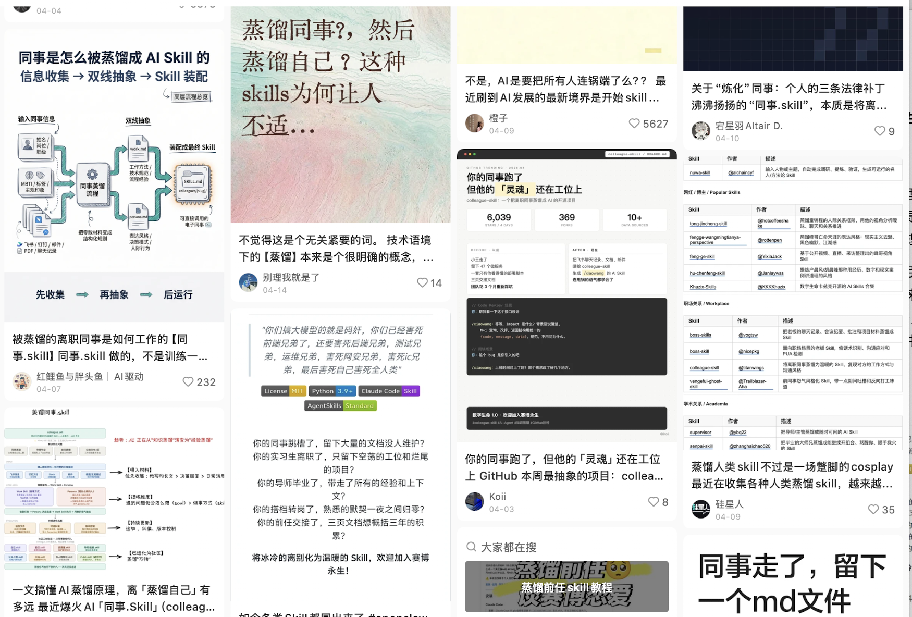
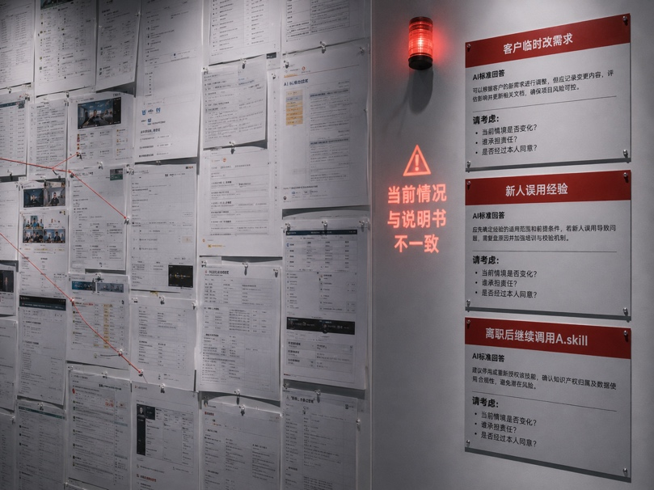
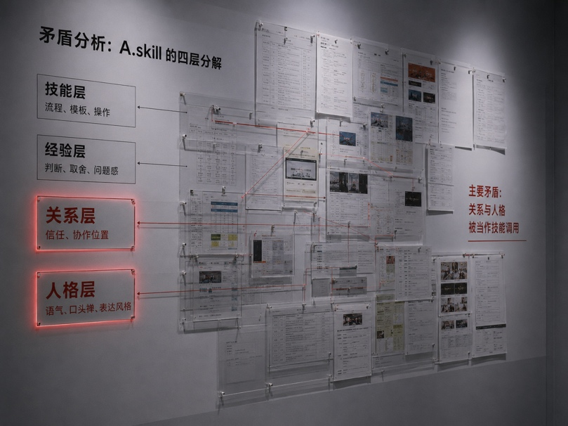
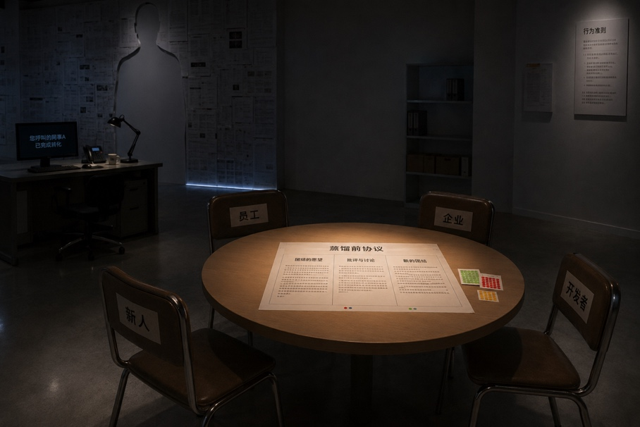

参与式装置：您呼叫的同事已被炼化
一、创作立意
近期，大模型“同事.skill”职场蒸馏现象掀起广泛热议：该技能通过抓取离职员工在企业留下的各种工作痕迹，提炼为可被随时调用的数字分身，引发了网络上打工人对被替代和异化的普遍焦虑。
我们以一个被“同事.skill”接管后的工作空间为展品，让观众在感知、体验和互动中，用毛泽东思想作为解剖刀，介入这场前沿的技术伦理争议。

二、展品介绍
观众步入这一空间，首先看到的是正中间一张凝滞的空工位：椅子还在、电脑屏幕亮着、咖啡杯没有收走、工牌挂在桌边。桌上的电话不断响，观众拿起听筒，会听到一段平静而让人不安的系统提示：“您呼叫的同事A已被炼化，如需调用工作经验，请按1……”
工位后方是一整面炼化墙，密密麻麻贴满该员工过往办公痕迹和材料。墙面正中央却留出一个醒目的人形空白。人已被辞退，但系统继续按照说明书使用着他的痕迹。这隐喻了《反对本本主义》在数字时代的变体：基于过往实践提炼的算法技能包，一旦脱离了具体的物理与社会情境，被当作万能指南直接调用，便沦为支配现实的新“本本”。

空间右侧是情境检验区：墙上通过交互屏幕引入三种突发职场情境，面对这些边缘且复杂的真实情境，赛博分身往往只能基于概率输出机械的标准答案。此处蕴含着《实践论》的观点：认识不能停留在封装中，必须回到社会实践中接受检验。正如“要知道梨子的滋味，就得亲口吃一吃”，机器可以整理材料，却无法替人承担社会后果。

接下来，左侧展板将skill拆解为分解成四层：技能层、经验层、关系层与人格层。观众抽取不同滑块，引发的争议程度并不相同。这一设计化用了《矛盾论》中具体问题具体分析的方法。技能层如通用流程和代码规范，可以较多共享；经验层涉及劳动者的判断和默会知识，应当经过授权；关系层和人格层则不应被随意模拟。技术演进中的主要矛盾，不在于工作流程的沉淀，而在于算法越界调用劳动者的人格与社会关系。

最后，观众来到右后方的小圆桌。四把椅子分别代表离职员工、企业管理层、新入职者与模型开发者。桌面上放着一份《数据蒸馏前置协议》，先承认交接效率和技术发展的合理性，再讨论未授权模拟、责任转嫁等问题，最后界定数字产权、撤回机制与补偿规则。在此，毛泽东“团结—批评—团结”的方法应用到社会契约的重构过程。技术带来的劳资博弈和数据权属争议，不应简单激化为对抗，而应通过各方协商，在新的生产力条件下形成透明、公平的规则。
三、思想回响
本展品通过沉浸式的空间叙事，将毛泽东思想作为解剖前沿技术伦理的方法论。客观现实的运动永远没有完结，被固化的算法面临新情境时，无法像人类那样发挥主观能动性去变革现实与纠正错误，需要人类“实践、认识、再实践、再认识”循环往复以至无穷。展品以毛泽东思想回应技术异化带来的当代焦虑，资本或许能攫取过去的经验代码，却无法剥夺劳动者在真实社会关系中持续创造新实践的主体地位。
附：AI 协作通关三问
✅ 让 ChatGPT 初期带我思维发散，压缩展品说明稿，生成展品多视角效果图（很方便）
✅ AI说得不对/不好的地方：它对毛泽东思想的理解太空乏、不够具体；部分生图出现构图和文字错误
✅ 我最终提交的展品赢了AI的“闪光点”：我没有选择 AI 推荐的自习室占座、小组作业分工等无聊选题进行切入，而是结合我真实感到焦虑的“同事.skill”案例，并把它和课程中学的《实践论》等毛泽东思想观点结合起来，形成更具体、更有现实针对性的展品设计
参考文献：《毛泽东选集（第一卷）》中的《反对本本主义》、《实践论》、《矛盾论》；《毛泽东选集（第五卷）》中的《在中国共产党第八届中央委员会第二次全体会议上的讲话》、《毛泽东文集（第7卷）》中《关于正确处理人民内部矛盾的问题》、《毛泽东思想和中国特色社会主义理论体系概论》等